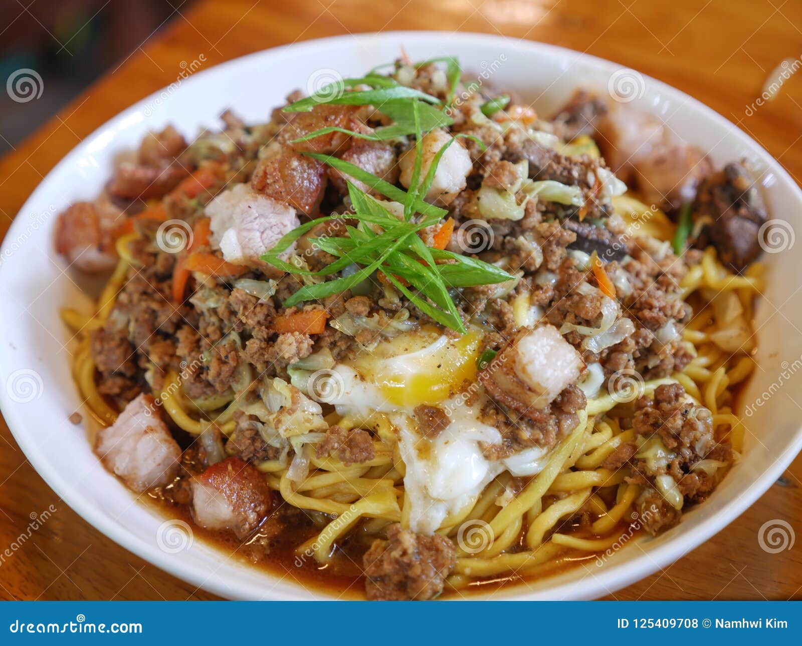

Batil Patong Recipe

Description
Batil Patong is a beloved noodle dish from Tuguegarao, Cagayan, in the northern Philippines. This hearty and savory stir-fried noodle dish features a combination of sautéed ground beef, pork liver, vegetables, and topped with a fried egg. It’s served with a rich soup made from the same broth used to cook the noodles, and is often accompanied by a side of calamansi or vinegar for a tangy kick.
Batil Patong is a deliciously satisfying meal that’s perfect for any time of the day, combining robust flavors with the comfort of noodles.
Ingredients
- 250g miki noodles (fresh egg noodles)
- 200g ground beef
- 100g pork liver, sliced thinly
- 2 cloves garlic, minced
- 1 onion, chopped
- 1/4 cup soy sauce
- 1 tablespoon oyster sauce
- 2 eggs (1 for topping, 1 for mixing with the broth)
- 1/2 cup beef broth
- 2 tablespoons cooking oil
- Salt and pepper to taste
Steps
- Heat oil in a pan over medium heat, then sauté garlic and onion until fragrant.
- Add ground beef and pork liver, cooking until browned and fully cooked. Season with soy sauce, oyster sauce, salt, and pepper.
- In a separate pot, cook the miki noodles in beef broth for a few minutes until tender. Drain and set aside, reserving the broth.
- Fry one egg sunny-side up and set it aside for topping.
- Mix one beaten egg into the reserved beef broth to create the "batil" or scrambled egg soup.
- Place the cooked noodles on a plate, top with the meat mixture, and the fried egg ("patong").
- Serve the noodles with the egg-drop soup on the side and garnish with calamansi or vinegar, if desired.